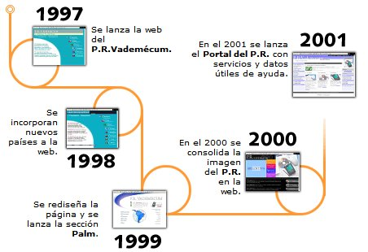

|
¿Qué es el diseño de sitios Web?Es aquél que muestra todo de una forma clara y sencilla de entender por el usuario. Aunque es imposible crear un sitio que sea claro y eficiente para cada usuario, el diseñador debe esforzarse para mostrar las cosas tan claramente como sea posible, de tal modo que reduzca al mínimo cualquier aspecto que pueda ser confuso. La usabilidad ayuda a que esta tarea se realicé de una forma sencilla analizando el comportamiento humano, y los pasos necesarios para ejecutar la tarea de una forma eficaz. tomado de : http://www.academia.edu/download/40944586/LA_USABILIDAD_Y_EL_DISENO_WEB.docx |
HISTORIAAunque los inicios de Internet se remontan a los años sesenta, no ha sido hasta los años noventa cuando, gracias a la Web, se ha extendido su uso por todo el mundo. En pocos años la Web ha evolucionado enormemente: se ha pasado de páginas sencillas, con pocas imágenes y contenidos estáticos a páginas complejas con contenidos dinámicos que provienen de bases de datos, lo que permite la creación de "aplicaciones web". De forma breve, una aplicación web se puede definir como una aplicación en la cual un usuario por medio de un navegador realiza peticiones a una aplicación remota accesible a través de Internet (o a través de una intranet) y que recibe una respuesta que se muestra en el propio navegador. |
 |
HTML 5HTML5 (HyperText Markup Language, versión 5) es la quinta revisión importante del lenguaje básico de la World Wide Web, HTML. HTML5 especifica dos variantes de sintaxis para HTML: una «clásica», HTML (text/html), conocida como HTML5, y una variante XHTML conocida como sintaxis XHTML5 que deberá servirse con sintaxis XML (application/xhtml+xml).12 Esta es la primera vez que HTML y XHTML se han desarrollado en paralelo. La versión definitiva de la quinta revisión del estándar se publicó en octubre de 2014. Al no ser reconocido en viejas versiones de navegadores por sus nuevas etiquetas, se recomienda al usuario común actualizar su navegador a la versión más nueva, para poder disfrutar de todo el potencial que provee HTML5. El desarrollo de este lenguaje de marcado es regulado por el Consorcio W3C Código: |
CSS3Identificar mediante explicaciones y test de nuevas características CSS 3 Artículos prácticos con explicaciones de las nuevas características de la especificación CSS3, útiles para hacer todo tipo de efectos gráficos de las webs modernas. Atributo gradiente de colores en borde con CSS y Firefox Posibilidad de definir el un gradiente de color en el borde de los elementos con CSS,en un atributo no estándar de Firefox. |
APLICACIÓN WEBEn la ingeniería de software se denomina aplicación web a aquellas herramientas que los usuarios pueden utilizar accediendo a un servidor web a través de Internet o de una intranet mediante un navegador. En otras palabras, es una aplicación software que se codifica en un lenguaje soportado por los navegadores web en la que se confía la ejecución al navegador. |